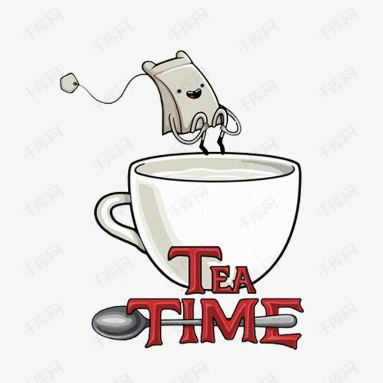
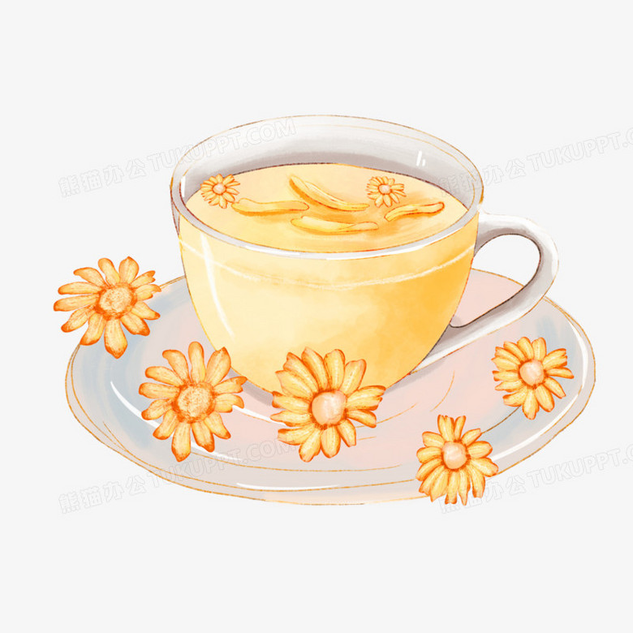
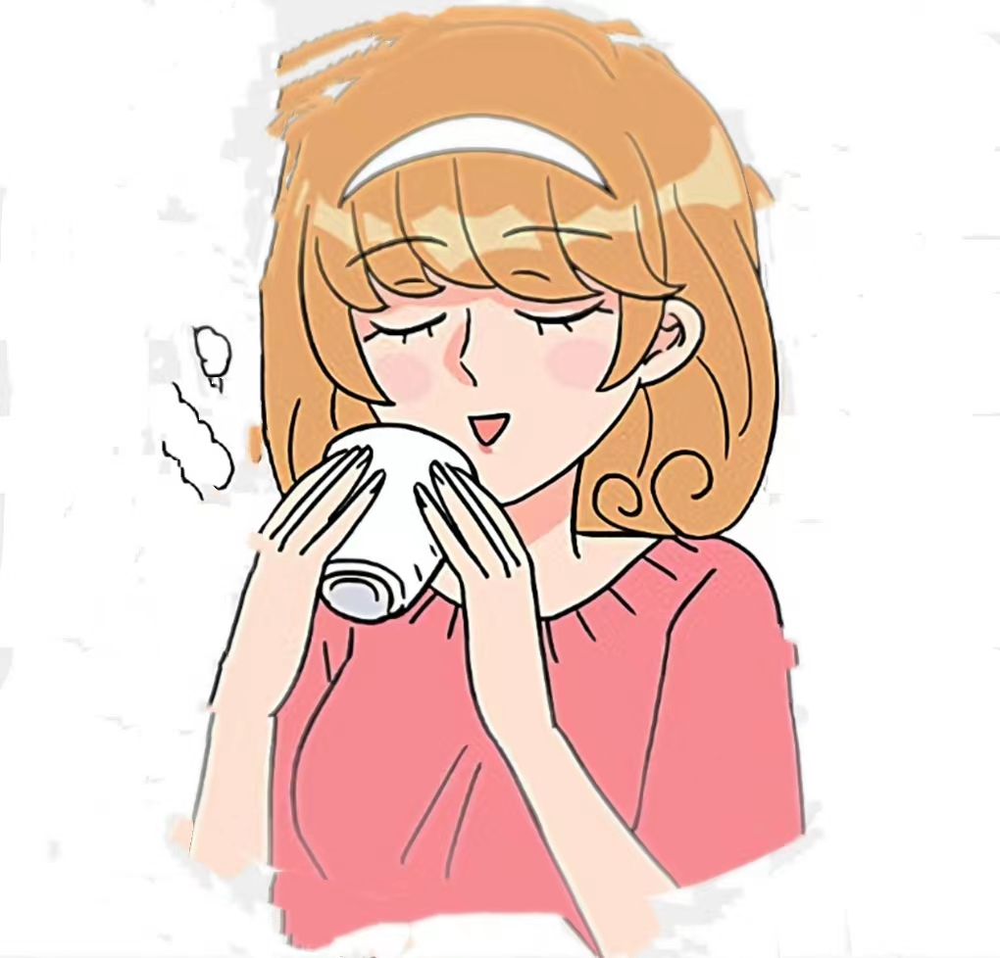
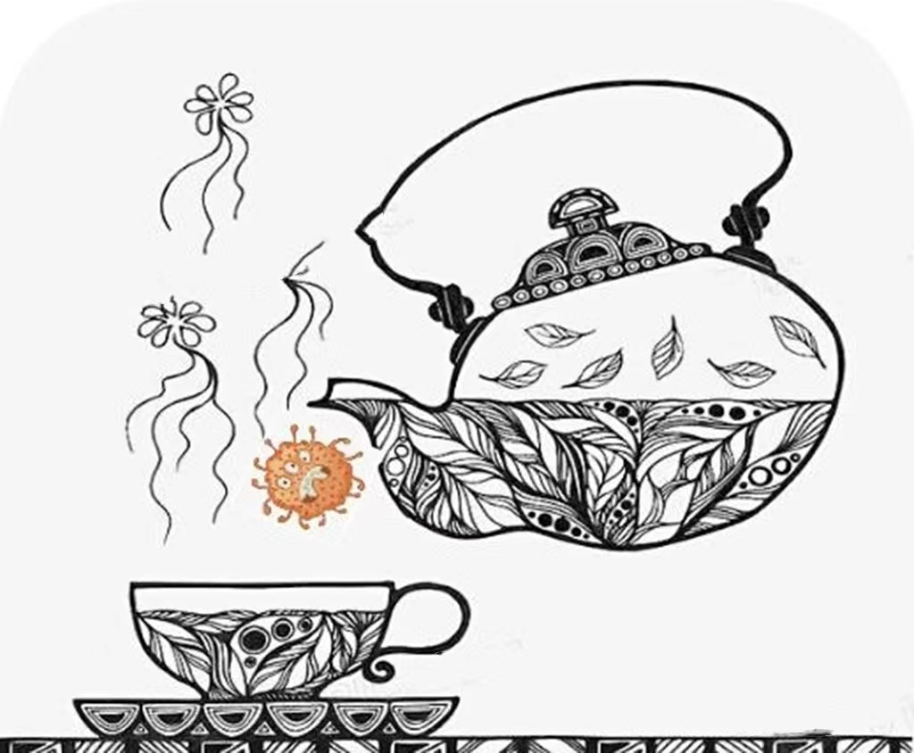

Value Function


Longjing Tea is refreshing, arouses fluid and quenches thirst, and reduces neutral fat and cholesterol in blood.It has the functions of anti-oxidation, anti-sudden change, anti-tumor, reducing the content of cholesterol and low density ester protein in blood, inhibiting the rise of blood pressure, inhibiting platelet agglutination, antibacterial, anti-product allergy and so on.

Longjing Tea can help people lose weight and keep beautiful. Longjing Tea contains theine, inositol, folic acid, pantothenic acid and aromatic substances and other compounds, which can regulate fat metabolism. Tea polyphenols and vitamin C can lower cholesterol and blood lipids, so drinking Longjing tea can help people lose weight.